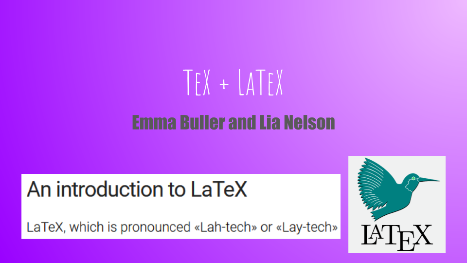
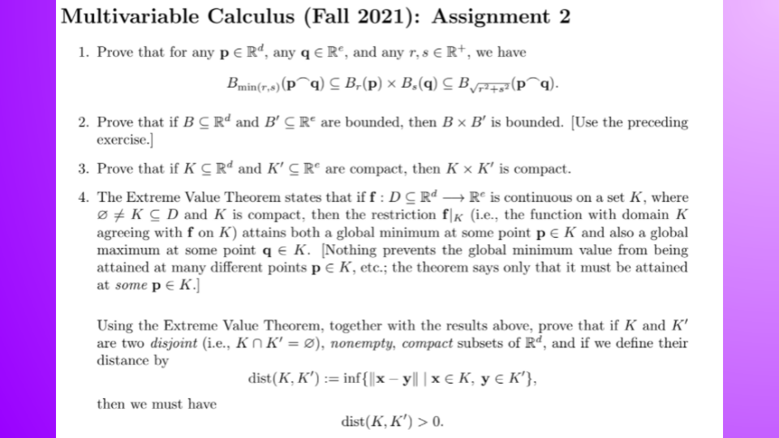
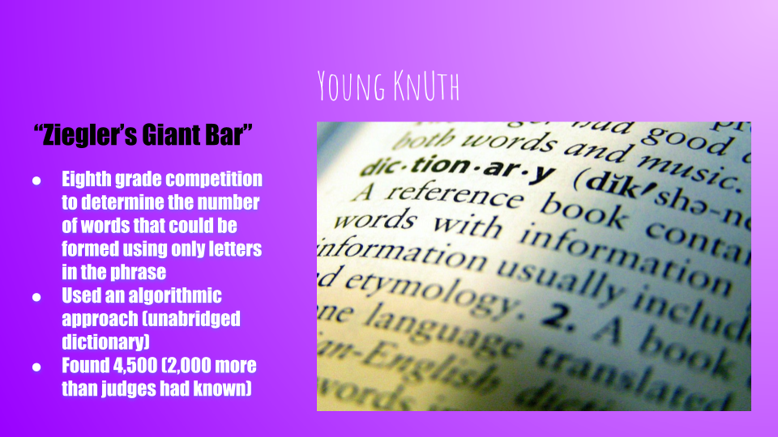
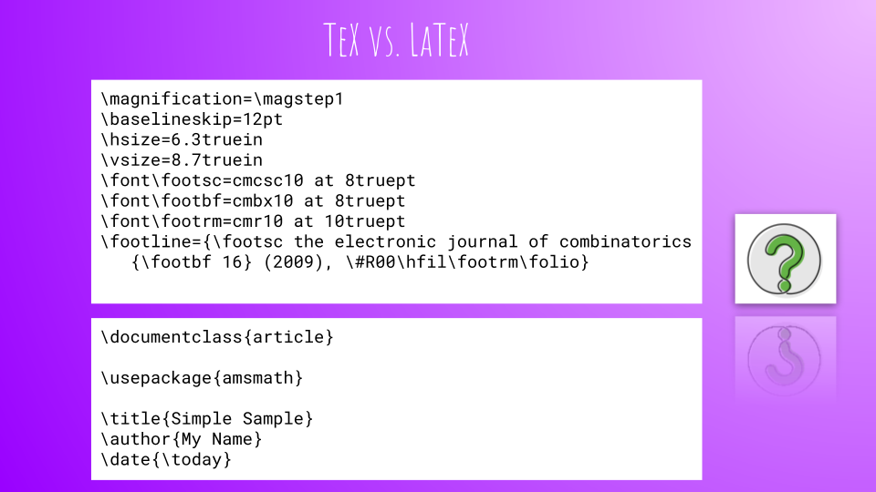
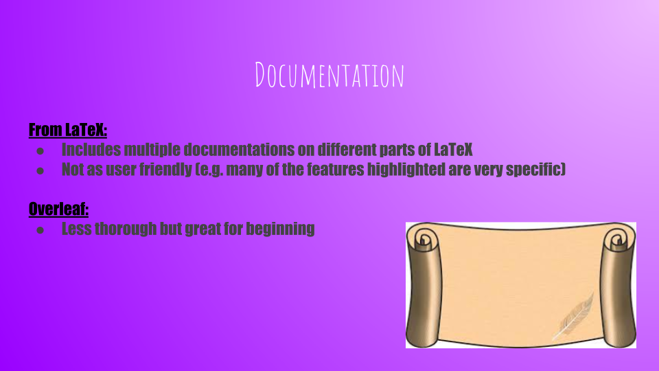
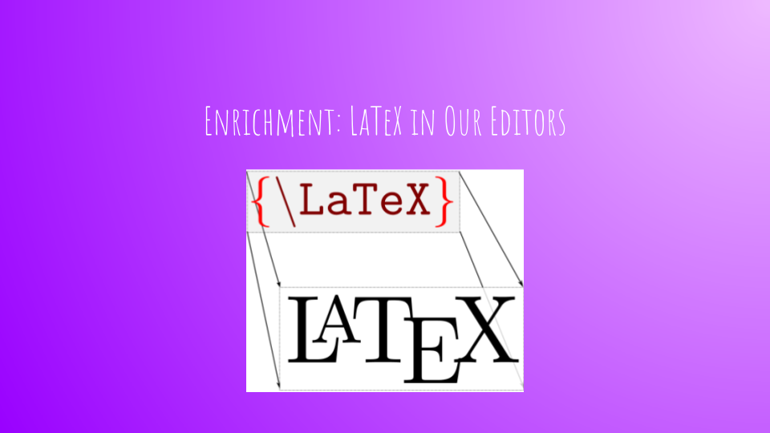
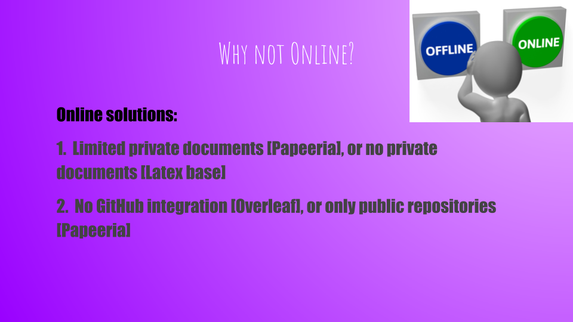
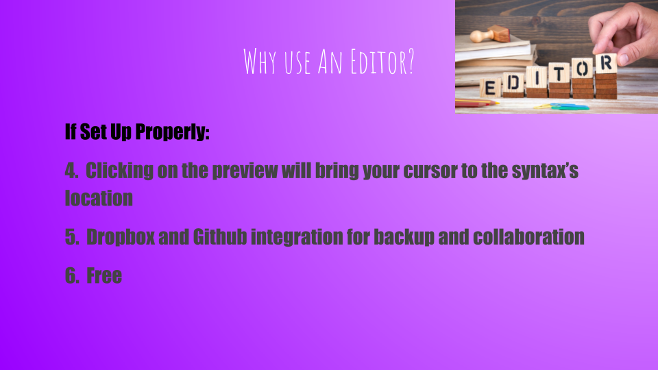
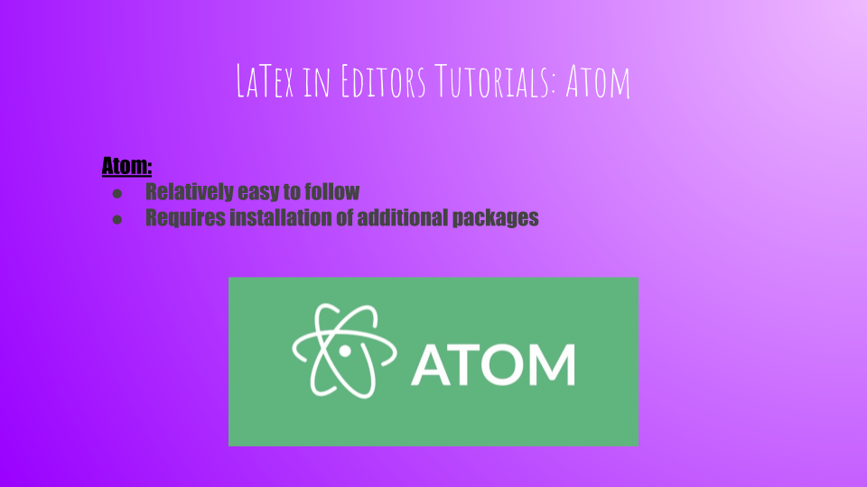

TeDeX (TEDx): LaTeX
Emma Buller and Lia Nelson
Important Links
Piazza Post
Demo

Welcome to the summary of our TeX + LaTeX talk!
Remember your pronounciation :)

Ahhh, yes, a school assignment (assigned to both Emma and Lia).
This is a good example of how LaTeX is utilized.

This slide never made it into our actual talk.
It is simply an example of a competition that Knuth participated in as a child that helps demonstrate his character.

Donald Knuth gave us The Art of Computer Programming.
This set of books describes the Knuth-Morris-Pratt string-searching algorithm (think Ctrl + F).
In order to make these volumes look nice, Knuth worked on TeX from 1977-1986 (consult the Yak Shave link on the Piazza post).

LaTeX is a document preparation system for the TeX typesetting program.
Similarly, LaTeX is a set of macros built on top of TeX.
A macro is is a rule or pattern that specifies how a certain input should be mapped to a replacement output (-Wikipedia).
LaTeX shifts the focus from the format to the content of the document.
This allows for the beautiful output of TeX while making code easier to read and write.
Can you tell which is TeX and which is LaTeX?
Spoiler: The LaTeX is on the bottom.

This describes the some choices of documentation to consult when learning LaTeX.
Once again, see Piazza post to access the links.

More enrichment that we never got to in our slides - writing LaTeX in our editors.


A quick explanation of some limitation present in online solutions for writing LaTeX.


Similarly, an explanation of the benefits that an editor can provide.

Description of a LaTeX tutorial for Atom.
(Consult Piazza post for link.)

Description of a LaTeX tutorial for Emacs.
(Consult Piazza post for link.)

Description of a LaTeX tutorial for Notepad++.
(Consult Piazza post for link.)